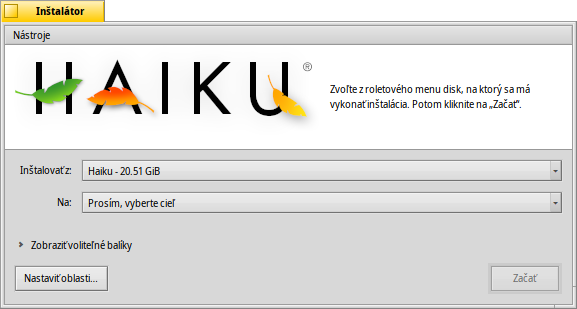

Inštalátor
Inštalátor
| Panel: | ||
| Umiestnenie: | /boot/system/apps/Installer | |
| Nastavenia: | žiadne |
Inštalátor sa používa na skopírovanie Haiku na iný disk.
Po štarte zobrazí štartovacie okno s dôležitou informáciou. Nie je to bezduchá EULA (licenčná dohoda s koncovým používateľom), ktorú zvyknete odkliknúť bez mihnutia oka, hovorí:
This is beta-quality software. Make backups or suffer the consequences!
The Installer needs a prepared partition. You can use DriveSetup to create and format a partition, but cannot yet resize existing partitions. For that you'll have to use a GParted LiveCD or a similar tool for now.
- Haiku môžete manuálne pridať do správcu zavádzania systému GRUB. Ako presne sa to robí je uvedené v online príručke.
Keď ste súhlasili stlačením , zobrazí sa vám hlavné okno:
V prvom vysúvacom menu vyberáte zdroj pre inštaláciu. Môže to byť aktuálne nainštalované Haiku alebo to môže byť inštalačné CD alebo USB kľúč atď.
Druhé vysúvacie menu špecifikuje cieľ inštalácie. Cieľová oblasť/disk budú úplne prepísané a musia byť nastavené predtým, nástrojom na správu oblastí ako napríklad GParted.
Kliknutím na malú rozbaľovaciu šípku Zobrazí voliteľné balíky, ak sú dostupné, ktoré si môžete vybrať na doinštalovanie k základnému Haiku.
Mali by ste naposledy skontrolovať, či ste naozaj vybrali správny cieľ pred začatím inštalácie. Kliknite na na otvorenie Nastavenia diskových oblastí a pozrite sa na názvy a rozloženie dostupných diskov a oblastí.
spustí proces inštalácie, ktorá v podstate kopíruje všetko okrem adresárov /home/ a /system/ na cieľový zväzok a nastaví, aby sa z neho dal zavádzať systém.
 Nástroje
Nástroje
Na konci inštalačnej procedúry je oblasť automaticky nastavená ako zavádzacia. Avšak, môže sa stať, že nejaký iný operačný systém alebo nástroj na správu oblastí (náhodou) prepíše zavádzací sektor vášho disku s Haiku. V tom prípade, použite vaše inštalačné CD a spustite Inštalátor. Vyberte vašu zavádzaciu oblasť Haiku z menu a vyberte z menu aby ste ho opäť označili ako zavádzací.
Druhá položka v menu sa používa, keď chcete , ktoré uloží do zavádzacieho sektora menu, z ktorého si môžete vybrať, ktorý operačný systém zaviesť. Ďalšie informácie nájdete v téme Správca zavádzania.
Nemusíte používať Správcu zavádzania, ak už používate iný podobný program, ako napríklad GRUB, v tomto prípade musíte Haiku pridať ručne (pozrite vyššie), alebo ak je Haiku jediný operačný systém na vašom počítači.